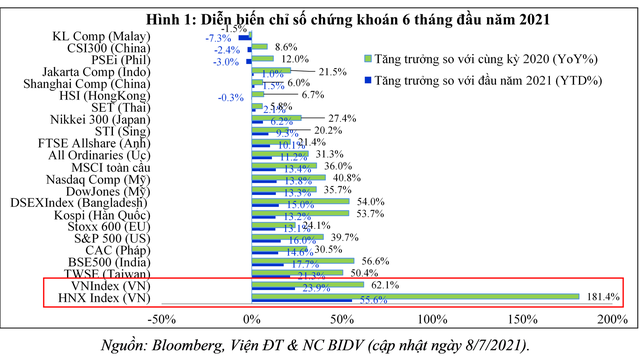
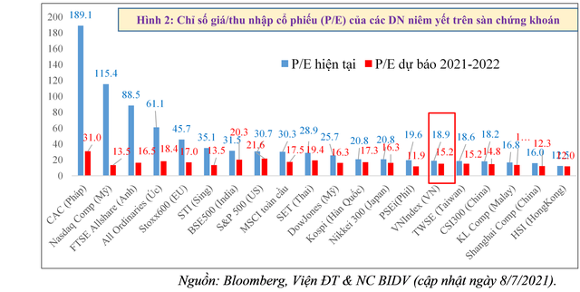
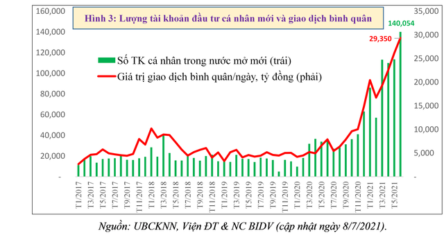
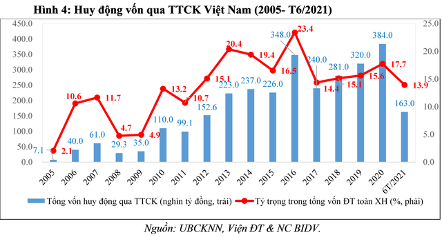

Ảnh minh họa
“Bùng nổ và liên tục phá ngưỡng lịch sử” là trạng thái của nhiều thị trường chứng khoán (TTCK) toàn cầu và Việt Nam bất chấp những diễn biến phức tạp, khó lường của dịch Covid-19; bất chấp những cảnh báo rủi ro và chính sách kiểm soát của cơ quan quản lý. Hiện tượng “bất ngờ và bất thường” này đã dấy lên quan ngại nguy cơ tăng nóng, bong bóng tài sản tài chính.
Bài viết này của TS. Cấn Văn Lực và Nhóm tác giả Viện Đào tạo và Nghiên cứu BIDV sẽ luận giải nguyên nhân của đà tăng trưởng ngoạn mục của TTCK Việt Nam, qua đó đi đến nhận định khả năng tăng nóng hay không cùng với một số khuyến nghị phù hợp nhằm giúp thị trường phát triển lành mạnh, bền vững hơn.1. Diễn biến thị trường chứng khoán thế giới và Việt Nam
Đồng nhịp với đà tăng của TTCK thế giới, TTCK Việt nam tăng vượt mọi dự báo với những kỷ lục về điểm số, thanh khoản, số tài khoản mở mới trong nửa đầu năm 2021. Tính đến hết ngày 8/7/2021, chỉ số chứng khoán sàn TP.HCM (VNIndex) tăng 24% và sàn Hà Nội (VHINdex) tăng gần 56% so với đầu năm 2021. Theo đó, VN-Index trở thành chỉ số chứng khoán tăng mạnh thứ 2 thế giới trong nửa đầu năm, chỉ xếp sau Abu Dhabi Index. So với cùng kỳ năm 2020, VN-Index là một trong những chỉ số chứng khoán tăng mạnh nhất thế giới với mức tăng 62%. Vốn hóa thị trường cổ phiếu tính đến hết tháng 5/2021 đạt 102,7% GDP (nếu tính cả thị trường trái phiếu lên tới 126,2% GDP), tăng 17,4% so với đầu năm. Thanh khoản thị trường liên tục lập đỉnh, trong 6 tháng đầu năm, giá trị giao dịch bình quân/ngày lên tới 22.430 tỷ đồng gấp 3 lần bình quân năm 2020 (riêng tháng 6/2021, đạt 29.350 tỷ đồng/phiên, gấp gần 4 lần bình quân năm 2020); giá trị khớp lệnh đạt 2,6 triệu tỷ đồng, tăng 152% so với cùng kỳ năm 2020; khối lượng giao dịch bình quân tháng 6/2021 cao hơn cả 4 năm (2107-2020) cộng lại. Rõ ràng là thị trường có yếu tố "đặc biệt" hay "bất thường" như một số nhà phân tích có nêu, nếu như không có giải thích chính đáng.
2. Năm (5) nguyên nhân chính cho đà tăng ngoạn mục của TTCK Việt Nam
Sau khi đạt đỉnh ngày 2/7/2021, TTCK Việt Nam trải qua 5 phiên liên tiếp trong trạng thái điều chỉnh và giằng co; tuy nhiên, các chỉ số vẫn đang ở vùng đỉnh lịch sử và vẫn là một trong những TTCK tăng mạnh nhất thế giới (Hình 1). Theo TS. Cấn Văn Lực và Nhóm tác giả Viện Đào tạo & Nghiên cứu BIDV, có 5 nguyên nhân chính giải thích cho đà tăng ngoạn mục của TTCK Việt Nam từ đầu năm 2020, nhất là từ đáy cuối tháng 3/2020 đến nay.
Một là, mức định giá hấp dẫn phản ánh triển vọng phục hồi, phát triển kinh tế; lợi nhuận doanh nghiệp và thanh khoản thị trường: kinh tế Việt Nam cả năm 2021 dự báo tăng trưởng 6,1-6,3%, cao hơn mức bình quân của thế giới và các nước đang phát triển toàn cầu (lần lượt dự báo tăng 5,6% và 6%, theo World Bank - tháng 6/2021), lạm phát được kiểm soát dưới 4% (khoảng 3,4-3,6%), các cân đối lớn của nền kinh tế được kiểm soát (theo Báo cáo KTVM 6 tháng đầu năm của Viện ĐT&NC BIDV) và dự báo lợi nhuận doanh nghiệp tăng khá (ở mức khoảng 20-22% so với năm 2020 theo FiinGroup và tổng hợp đánh giá của các công ty chứng khoán). TTCK Việt Nam dường như đang "chiết khấu" trước đà tăng trưởng khả quan của kinh tế thực, thậm chí đi trước 3-6 tháng. Tính đến hết ngày 8/7/2021, chỉ số giá/thu nhập cổ phiếu (P/E) của các doanh nghiệp niêm yết trên sàn chứng khoán TP.HCM ở mức 19 lần, bằng 50% so với thời điểm bùng nổ năm 2006-2007 (khi đó VNIndex đạt 1.071 điểm và hệ số P/E ở mức 37,2 lần) trong khi số lượng tài khoản gấp 16 lần, vốn hóa gấp 18 lần và thanh khoản gấp 30 lần. Nhờ đó, trong khi TTCK của nhiều quốc gia đã ở mức "đắt đỏ" thì TTCK Việt Nam vẫn có mức định giá khá hấp dẫn so với hầu hết TTCK ASEAN, Nhật Bản, Hàn Quốc, Ấn Độ, Singapore. Tuy nhiên, mức giá này cũng không còn rẻ, nên sẽ có những điều chỉnh hiện nay và trong thời gian tới. Thực tế, tính đến hết ngày 08/07/2021 sau 4 phiên điều chỉnh, P/E đã giảm từ mức 19,3 lần xuống mức 18,9 lần (Hình 2).
Hai là, dòng tiền chứng khoán không quá phụ thuộc vào kênh tín dụng khi cho vay chứng khoán và cho vay giao dịch ký quỹ (margin) vẫn trong tầm kiểm soát. Cho vay đầu tư, kinh doanh chứng khoán của các tổ chức tín dụng hiện không quá cao (chỉ chiếm khoảng 0,5% tổng dư nợ toàn nền kinh tế), thấp hơn mức 1,5-2% của giai đoạn 2007-2009. Hơn nữa, dư nợ chứng khoán chỉ tăng 3% trong 6 tháng đầu năm 2021, thấp hơn mức tăng trưởng tín dụng toàn nền kinh tế (khoảng 6,4%). Theo UBCKNN, tổng dư nợ giao dịch ký quỹ (margin) tại các công ty chứng khoán (CTCK) trong 6 tháng đầu năm 2021 ở mức 115 nghìn tỷ đồng, tăng 38,5% so với cuối năm 2020, bằng khoảng 58% tổng dư địa cho vay ký quỹ ước tính cả năm 2021 (khoảng 200 nghìn tỷ đồng căn cứ trên kế hoạch tăng vốn chủ sở hữu - khoảng 15 nghìn tỷ đồng năm 2021 của các CTCK), như vậy cơ bản là trong tầm kiểm soát. Đồng thời, UBCKNN cũng đã đưa ra cảnh báo và áp dụng các biện pháp kiểm soát mạnh đối với cho vay ký quỹ. Ngoài ra, xu hướng thanh khoản tăng mạnh được "hậu thuẫn" bởi kỷ lục về số lượng tài khoản đầu tư cá nhân trong nước mới (F0), lên tới gần 620.000 tài khoản trong 6 tháng đầu năm, gấp 1,6 lần cả năm 2020 (riêng tháng 6 lên tới 140.000 tài khoản), theo VSD.
Theo TS. Cấn Văn Lực và Nhóm chuyên gia Viện Đào tạo & Nghiên cứu BIDV, có ba lý do chính cho hiện tượng sôi động này. Thứ nhất, lãi suất tiền gửi ngân hàng khá thấp, nên nhiều khách hàng rút ra hoặc không gia hạn tiền gửi tiết kiệm nữa để đầu tư chứng khoán (vốn huy động của các TCTD 6 tháng đầu năm tăng khoảng 4%, thấp hơn mức tăng 4,4% cùng kỳ năm 2020 và mức 6,1% cùng kỳ năm 2019; thấp hơn mức tăng trưởng tín dụng 6,4%). Thứ hai, trong bối cảnh dịch bệnh; việc sản xuất, kinh doanh, khởi nghiệp gặp khó khăn, dẫn đến nhiều doanh nghiệp, cá nhân dùng nguồn tiền "nhàn rỗi" để đầu tư chứng khoán. Thứ ba, đầu tư chứng khoán hiện nay được cho là mang lại mức sinh lời khá (VNIndex năm 2020 tăng gần 15% và tăng 28% trong 6 tháng đầu năm) so với nhiều kênh đầu tư khác nên được nhiều nhà đầu tư lựa chọn. Tuy nhiên, điều này cũng có mặt trái, rủi ro của nó (như phân tích dưới đây).
Ba là, động thái bán ròng của khối ngoại ảnh hưởng không lớn và khả năng sớm tăng trở lại: trong 6 tháng đầu năm, khối ngoại đã bán ròng 32,2 nghìn tỷ đồng (1,4 tỷ USD) trên TTCK Việt Nam, gấp 2 lần cả năm 2020. Tuy nhiên, mức độ ảnh hưởng đến thanh khoản và tâm lý thị trường không lớn như trước đây bởi giá trị bán ròng lớn về số tuyệt đối song tỷ trọng lại đang giảm. Nếu so với giai đoạn 2006-2007, giá trị giao dịch của nhà đầu tư ngoại chiếm tới 20-25% giá trị thị trường thì đến nay chỉ còn chiếm khoảng 9-10%. Động thái bán ròng của khối ngoại thực chất là cơ cấu lại danh mục đầu tư hơn là rút vốn bởi: (i) Mức bán ròng thấp hơn nhiều thị trường trong khu vực như Đài Loan (13,7 tỷ USD), Thái Lan (2,3 tỷ USD), Hàn Quốc (17,6 tỷ USD), Trung Quốc (4,6 tỷ USD)…; (ii) Giá trị danh mục đầu tư của khối ngoại vẫn ở mức 49,5 tỷ USD, tăng 36% so với năm 2019, khối ngoại vẫn đang mua ròng trên thị trường trái phiếu từ năm 2016 đến hết tháng 5/2021 (khoảng 2,6 tỷ USD); (iii) Làn sóng mới từ các quỹ đầu tư lớn của Mỹ, Đài Loan…cho thấy dòng vốn ngoại vẫn đang chờ đợi cơ hội thích hợp để quay lại. TS. Cấn Văn Lực và Nhóm tác giả Viện Đào tạo & Nghiên cứu BIDV cho rằng kịch bản mua ròng sẽ tăng trở lại (giống như bối cảnh khối ngoại bán ròng mạnh năm 2016, sau đó mua ròng trở lại trong năm 2017) với quy mô và chất lượng cao hơn, nhất là khi hiện tượng nghẽn lệnh được khắc phục.
Bốn là, vai trò kênh dẫn vốn của TTCK ngày càng tăng, củng cố niềm tin thị trường. Chỉ số cảm nhận rủi ro của các nhà đầu tư tại Việt Nam (thể hiện qua chỉ số hoán đổi rủi ro tín dụng – CDS trong 5 năm đang ở mức thấp và khá ổn định (khoảng 105-110 điểm), chỉ bằng 1/5 so với mức đỉnh năm 2008-2009. Niềm tin đầu tư là có cơ sở khi quy mô vốn hóa thị trường cổ phiếu có sự tăng trưởng vượt bậc sau hơn 20 năm phát triển (từ mức 0,28%GDP năm 2000 lên tới 102,7% GDP cuối tháng 5/2021, tăng 6.530 lần); tổng vốn huy động trên TTCK chiếm tỷ trọng trung bình khoảng 17,3% tổng vốn đầu tư toàn xã hội trong giai đoạn 2016-6T/2021, tăng mạnh và ổn định hơn so với tỷ trọng 11-12% giai đoạn 2005-2015. Lịch sử đã chứng minh khi chỉ số CDS ở mức thấp đồng nghĩa với khả năng lựa chọn đầu tư vào thị trường tài chính sẽ cao, thị trường còn cơ hội bứt phá, nhất là trong điều kiện nhiều lĩnh vực kinh doanh còn khó khăn.
Năm là, bong bóng chứng khoán sẽ khó xảy ra nếu cung - cầu đồng pha: theo khuyến cáo của IMF, để đánh giá khả năng bong bóng hay không cần khẳng định rõ hai yếu tố, đó là giá tăng một cách phi lý (không có cơ sở) và quan hệ cung - cầu thị trường lệch pha. Với Việt Nam, cả hai yếu tố này dường như chưa rõ ràng bởi: (i) Giá chứng khoán tăng là có cơ sở từ yếu tố cốt lõi là kỳ vọng tăng trưởng kinh tế, lợi nhuận doanh nghiệp và thanh khoản thị trường tốt như phân tích ở trên; (ii) Sức cung của thị trường vẫn đang tăng cùng nhịp với lực cầu. Nếu thanh khoản tăng gấp 3 lần năm 2020 thì tổng giá trị phát hành tăng vốn của các CTCK dự kiến năm 2021 cũng ở mức kỷ lục 102 nghìn tỷ đồng, gấp 5,2 lần năm 2020 (theo FiinGroup); cùng với đó là nguồn cung khoảng 40 nghìn tỷ đồng từ cổ phần hóa, thoái vốn DNNN. Nếu lượng cung lớn này xảy ra đồng nghĩa lực cầu đủ mạnh để hấp thụ lượng hàng lớn thì nguy cơ bong bóng sẽ khó xảy ra.
Nói như vậy, nhưng chúng ta không chủ quan và coi thường bởi vì TTCK Việt Nam cũng đã xuất hiện dấu hiệu tăng "khá nóng" khi tâm lý sợ bỏ lỡ cơ hội (FOMO) tăng cao; giá cổ phiếu của nhiều nhóm ngành đã tăng mạnh, cao hơn nhiều tốc độ tăng chung và vượt quá giá trị kỳ vọng của ngành, doanh nghiệp (có 8 ngành nghề có giá cổ phiếu tăng từ 25-67% từ đầu năm đến nay). Thị trường cũng đang xuất hiện một số rủi ro, thách thức.
3. Sáu (6) rủi ro cần nhận diện
Về mặt lý thuyết, 3/5 dấu hiệu bong bóng tài sản tài chính đã xuất hiện đối với TTCK Việt Nam đó là lãi suất ở mức thấp, lạm phát gia tăng và sự hưng phấn quá mức của nhà đầu tư (hai dấu hiệu còn lại là thiếu nguồn cung và thị trường không hoàn hảo – thiếu thông tin chưa xuất hiện). Mặc dù khả năng bong bóng khó xảy ra song nguy cơ rủi ro vẫn luôn tiềm ẩn, nhất là khi TTCK Việt Nam đang ở vùng đỉnh, không thể chủ quan và mạo hiểm.
Theo TS. Cấn Văn Lực và Nhóm tác giả Viện Đào tạo & Nghiên cứu BIDV, 6 rủi ro cần nhận diện đối với TTCK Việt Nam. Một là, như đa số TTCK các nước hiện nay, vai trò hàn thử biểu của TTCK với nền kinh tế thực ngày càng lỏng lẻo (chỉ số chứng khoán VNIndex 2 tháng qua tăng 13,6%, trong khi đợt dịch thứ 4 xuất hiện và ngày càng phức tạp tại Việt Nam, một số chỉ số như tiêu dùng, sản xuất công nghiệp đang đà giảm; trong tháng 6/2021, tổng mức bán lẻ giảm 2% so với tháng trước và chỉ số nhà quản trị mua hàng (PMI) tháng 6 giảm mạnh nhất trong vòng 1 năm - giảm 16,9% so với tháng 5 chỉ còn 44,1 điểm; số DN tạm ngừng kinh doanh và giải thể lũy kế 6 tháng đầu năm lần lượt tăng 22% và 33,8% - là mức cao nhất trong giai đoạn 2018-2021). Hai là, dấu hiệu thắt chặt tài khóa, tiền tệ đã bắt đầu "nhen nhóm" ở một số quốc gia do áp lực lạm phát gia tăng (nhiều NHTW thế giới đã công bố lộ trình tăng lãi suất sớm hơn dự kiến). Điều này có thể dẫn đến hiện tượng dịch chuyển dòng vốn đầu tư gián tiếp (FII) từ một số thị trường mới nổi quay về thị trường Mỹ và một số khu vực khác (nơi mà lợi suất tăng, rủi ro chảy vốn thấp).
Ba là, khả năng sinh lời của các doanh nghiệp đang bị ảnh hưởng tiêu cực bởi chi phí đầu vào tăng (giá xăng dầu, giá nguyên nhiên liệu và chi phí logistics …đều tăng) trong khi giá đầu ra chưa tăng tương ứng, từ đó tất yếu sẽ ảnh hưởng đến giá cổ phiếu. Bốn là, tính ổn định của dòng vốn chưa cao (ở Việt Nam, khoảng hơn 90% nhà đầu tư là cá nhân, nhỏ lẻ, thiếu chuyên nghiệp, hay bị ảnh hưởng bởi tâm lý đám đông và đòn bẩy tài chính còn cao; nên mỗi khi có biến cố hay rủi ro, có thể dẫn đến hiện tượng bán tháo). Năm là, "sức nóng" cho vay margin sẽ giảm và cảnh báo thận trọng vẫn tiếp tục đưa ra. Dư nợ margin thực chất là "con dao hai lưỡi": một mặt, có thể giúp thị trường tăng trưởng nhanh, mặt khác có thể làm trầm trọng thêm rủi ro khi thị trường điều chỉnh (lịch sử giải chấp do các lệnh gọi ký quỹ "margin calls" năm 2007 đã khiến TTCK sụt giảm mạnh). Do đó, dù cho vay ký quỹ vẫn trong tầm kiểm soát nhưng sẽ có khả năng bị siết chặt hơn trong 6 tháng cuối năm khi dư nợ margin đã tăng mạnh thời gian qua (từ mức 93,3% vốn chủ sở hữu quý 4/2020 lên 160% hết quý 2/2021 và nhiều CTCK tiệm cận trần quy định), hệ số dư nợ cho vay ký quỹ/giá trị giao dịch trung bình trong 6 tháng đầu năm 2021 là 4,3 lần, là mức cao so với nhiều TTCK thế giới (khoảng 1,5-2,5 lần; của Mỹ 1,9 lần; của Trung Quốc 2,1 lần…v.v.). Sáu là, không loại trừ hiện tượng một số doanh nghiệp có thể "làm bóng" kết quả kinh doanh, tranh thủ đà tăng của thị trường để phát hành chứng khoán, như đang xảy ra với một số TTCK trên thế giới (Mỹ, Trung Quốc…).
Tuy nhiên, mức độ điều chỉnh của thị trường sẽ không quá lớn nếu nhìn từ góc độ áp lực cho vay margin. TS. Cấn Văn Lực và Nhóm tác giả Viện Đào tạo & Nghiên cứu BIDV cho rằng, rủi ro áp lực giải chấp (đã từng xảy ra sau thời điểm bùng nổ tháng 3/2007) sẽ khó xảy ra tại thời điểm hiện tại bởi: (i) hầu như không có tình trạng căng thẳng thanh khoản cuối kỳ do "chạy đua" bù đắp dư nợ margin mà ngược lại các CTCK đã vay mạnh trong kỳ và trả nợ cuối kỳ để đảm bảo dư nợ cuối kỳ theo đúng quy định (đến cuối kỳ 30/06/2021, tổng dư nợ tín dụng chứng khoán chỉ ở mức 46.700 tỷ đồng); (ii) các biện pháp cảnh báo, điều chỉnh kỹ thuật liên tục được đưa ra nhằm đảm bảo tỷ lệ ký quỹ/cho vay duy trì quanh mức chuẩn là 50/50% (tức là để vay 1 đồng để đầu tư, nhà đầu tư cũng cần có 1 đồng vốn của riêng mình), đảm bảo đòn bẩy tài chính không quá lớn.
Về triển vọng thị trường: được đánh giá là khả quan, ít nhất là trong trung hạn và còn nhiều dư địa tăng trưởng khi TTCK Việt Nam được đánh giá là một trong những thị trường có sức chống chịu tốt với đại dịch (theo Bloomberg, IMF). Tuy nhiên, theo TS. Cấn Văn Lực và Nhóm tác giả Viện Đào tạo & Nghiên cứu BIDV, đà tăng trưởng của TTCK Việt Nam trong 6 tháng cuối năm 2021 nhiều khả năng sẽ chậm lại so với nửa đầu năm, tình trạng phân hóa giữa các nhóm ngành, nhóm cổ phiếu vẫn tiếp tục gia tăng và sẽ còn những đợt điều chỉnh cần thiết. Điều này là đáng mừng hơn là lo bởi giá cổ phiếu sẽ phản ánh thực chất hơn mức độ phục hồi, phát triển của nền kinh tế cũng như giá trị cốt lõi của các ngành và doanh nghiệp, đưa vai trò hàn thử biểu của TTCK dần trở về quỹ đạo và góp phần ổn định, lành mạnh hóa thị trường.
4. Bốn (4) khuyến nghị chính
Để hạn chế rủi ro cho nhà đầu tư, đồng thời tăng khả năng phát triển bền vững của TTCK Việt Nam, TS. Cấn Văn Lực và Nhóm tác giả Viện Đào tạo & Nghiên cứu BIDV có 4 khuyến nghị chính sau.
Một là, cần tiếp tục kiểm soát dòng tiền vào chứng khoán, từ đó hướng dòng vốn vào sản xuất, kinh doanh nhiều hơn cùng với đà phục hồi, phát triển của nền kinh tế: (i) Tiếp tục kiểm soát dòng tín dụng chứng khoán; (ii) Tăng cường giám sát, minh bạch hóa hoạt động giao dịch ký quỹ của các CTCK nhằm đảm bảo an toàn, bền vững cho thị trường.
Hai là, tăng tính minh bạch, chuyên nghiệp của thị trường, tạo nguồn cung chứng khoán có chất lượng: (i) Đẩy mạnh tiến trình cổ phần hóa gắn với niêm yết, tăng tỷ lệ huy động vốn qua TTCK; (ii) Kế hoạch tăng vốn qua phát hành cổ phiếu, trái phiếu của các DN, ngân hàng, CTCK cần được phân bổ hợp lý, tránh tăng mạnh vào cùng một thời điểm (đặc biệt cuối quý/năm) nhằm tránh hiện tượng tăng nóng ở một thời điểm; (iii) Phát triển hệ thống xếp hạng tín nhiệm độc lập, công khai thông tin về xếp hạng tín nhiệm của DN phát hành trái phiếu và thông tin về các đợt phát hành nhằm nâng cao chất lượng trái phiếu doanh nghiệp; và (iv) Xử lý nghiêm vi phạm liên quan đến hiện tượng "làm bóng" kết quả kinh doanh để phát hành chứng khoán của một bộ phận DN.
Ba là, nâng cao năng lực thể chế, công nghệ: (i) Nâng cao năng lực quản lý, giám sát, an toàn hoạt động của TTCK (bao gồm cả rủi ro hệ thống, rủi ro CNTT, đầu tư đa cấp, huy động vốn cộng đồng trên nền tảng công nghệ…); xây dựng hệ thống cảnh báo sớm về rủi ro thị trường, bong bóng tài sản tài chính; (ii) Nâng cao chất lượng hoạt động, quản trị của các CTCK (đặc biệt là năng lực quản trị rủi ro và ứng dụng công nghệ mới,…); (iii) Nghiên cứu triển khai kết hợp hệ thống giao dịch mới và giao dịch T+0, giúp tăng thanh khoản thị trường, tăng lượng vốn huy động qua TTCK; và (iv) Sớm giải quyết hiện tượng nghẽn lệnh, vừa là giảm thiểu rủi ro, vừa tăng thanh khoản và niềm tin thị trường.
Bốn là, nâng cao kiến thức, năng lực nhà đầu tư (đặc biệt là nhà đầu tư cá nhân): (i) Đẩy nhanh tiến độ chuẩn hóa kiến thức nền về chứng khoán, TTCK cho các nhà đầu tư; (ii) Cần xây dựng Chương trình giáo dục tài chính như là một chiến lược cấu phần của Chiến lược Tài chính toàn diện đến năm 2030 (Chính phủ đã ban hành tháng 1/2020); (iii) Bản thân các nhà đầu tư cá nhân cũng cần nâng cao kiến thức về đầu tư chứng khoán; áp dụng các nguyên tắc quan trọng trong đầu tư, đó là: đa dạng hóa, không nên dùng đòn bẩy tài chính quá nhiều, giảm thiểu tâm lý đám đông…v.v.
TS. Cấn Văn Lực và Nhóm tác giả Viện Đào tạo & Nghiên cứu BIDV